| Leaves : | Leaves simple , alternate , spiral , clutered at twig ends; stipules lateral , caducous and leaving scar ; petiole 5-10 cm long, terete , swollen at apex , glabrous ; lamina 10-20 (-30) x 7.6-14 (-20) cm, broadly ovate or oblong-ovate , apex acute or slightly acuminate , base cordate or subtruncate , margin entire or slightly undulate , thinly coriaceous , glabrous ; midrib raised above; 5-nerved at base; secondary_nerves 3-4 pairs ascending, raised above; tertiary_nerves distantly reticulo-percurrent . |

 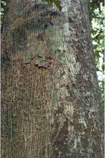
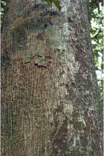
 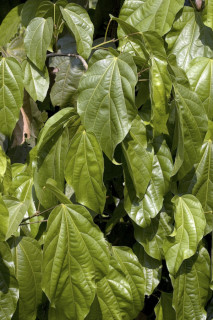
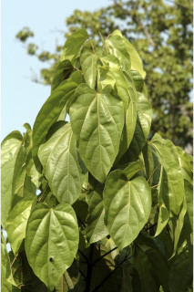
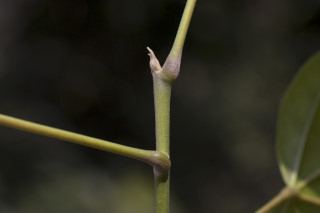
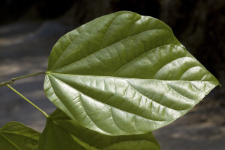
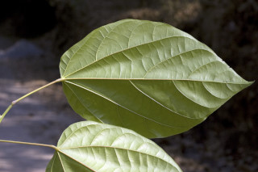
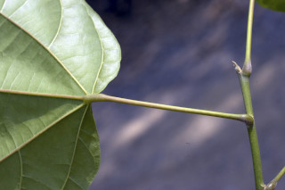
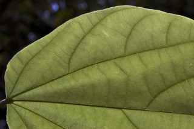
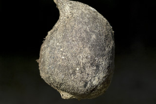
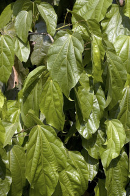
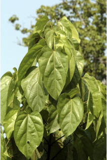
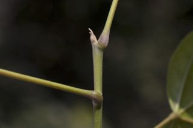
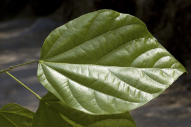
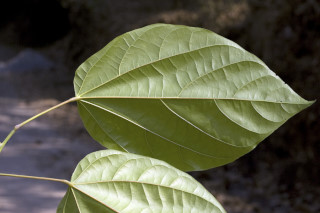
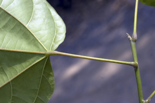
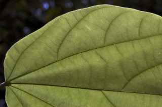
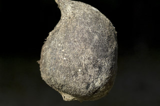